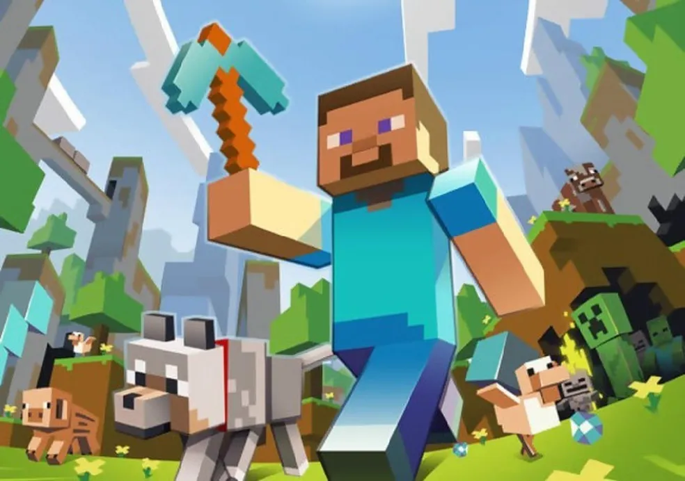

"Minecraft: O Universo Infinito da Criatividade" Desde o seu lançamento em 2011, Minecraft tornou-se muito mais do que apenas um jogo. É um fenômeno cultural que transcende gerações, unindo pessoas de todas as idades em uma aventura virtual sem limites. No coração deste mundo digital está a liberdade criativa, onde os jogadores são os arquitetos de seus próprios universos. Em Minecraft, você é lançado em um vasto mundo gerado proceduralmente, onde cada nova paisagem é uma tela em branco esperando para ser moldada pela sua imaginação. Desde as montanhas mais altas até os abismos mais profundos, cada bloco é uma oportunidade para criar, construir e explorar. Com uma variedade infinita de recursos e possibilidades, Minecraft oferece algo para todos. Se você é um construtor nato, pode criar cidades inteiras, castelos majestosos ou até mesmo réplicas de locais famosos do mundo real. Se prefere desafios, pode explorar cavernas sombrias em busca de tesouros, enfrentar monstros perigosos ou até mesmo embarcar em expedições para o Nether e o End Além disso, Minecraft é uma plataforma de aprendizado, onde a criatividade e a colaboração são incentivadas. Muitas escolas ao redor do mundo incorporaram o jogo em seus currículos, usando-o como uma ferramenta para ensinar matemática, história, ciência e muito mais. Os jogadores também podem se reunir em servidores multiplayer para trabalhar juntos em projetos épicos ou competir em desafios emocionantes. Mas o verdadeiro poder de Minecraft vai além de seus blocos pixelizados e paisagens geradas aleatoriamente. É a comunidade apaixonada de jogadores, criadores de conteúdo e desenvolvedores que tornam este mundo tão especial. De mods e texturas personalizadas a servidores customizados e minijogos, a comunidade está constantemente elevando o jogo a novos patamares de criatividade e inovação.
